Pavimentazione
| “ | “Adorna il pavimento di una stanza.” |
- Per oggetti decorativi artigianali, vedi Fabbricazione.
- Per mobilia, vedi Mobilia.
- Per carta da parati, vedi Carta da parati.
La Pavimentazione è venduta all'Emporio di Pierre per  200o e al JojaMart per
200o e al JojaMart per  250o. Ogni giorno viene venduto un nuovo pavimento. La pavimentazione venduta al JojaMart sarà venduta il giorno successivo da Pierre.
250o. Ogni giorno viene venduto un nuovo pavimento. La pavimentazione venduta al JojaMart sarà venduta il giorno successivo da Pierre.
La pavimentazione può anche essere ottenuta dal Catalogo. Si tratta di un oggetto d'arredo acquistato dall'Emporio di Pierre che mette in vendita tutti i pavimenti (e carta da parati) ovunque sia collocato l'oggetto. Lo stock non ruota, tutte le varietà sono immediatamente disponibili per la vendita.
Questi oggetti sono monouso e non si accumulano.
Non hanno nomi univoci, quindi la tabella seguente elenca i pavimenti nello stesso ordine mostrato nel catalogo.
| Icona | Aspetto pavimento | Icona | Aspetto pavimento | Icona | Aspetto pavimento | Icona | Aspetto pavimento | Icona | Aspetto pavimento |
|---|---|---|---|---|---|---|---|---|---|

|

|
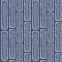 | 
|
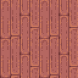 | |||||
| 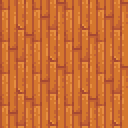 | 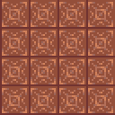 | 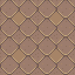 | 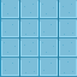 | 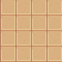 | |||||
| 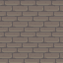 | 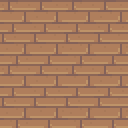 | 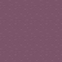 | 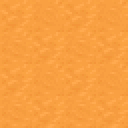 | 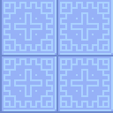 | |||||
| 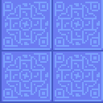 | 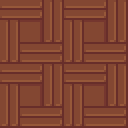 | 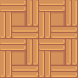 | 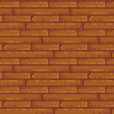 | 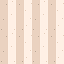 | |||||
| 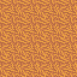 | 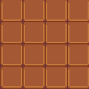 | 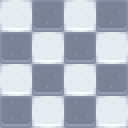 | 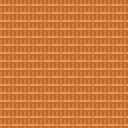 | 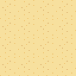 | |||||
| 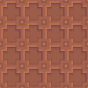 | 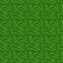 | 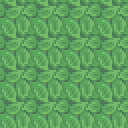 | 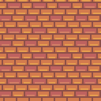 | ||||||
| 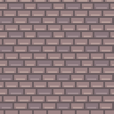 | 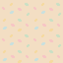 | 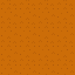 | 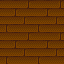 | ||||||
| 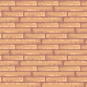 | 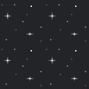 | ||||||||
| 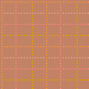 | 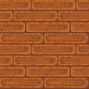 | 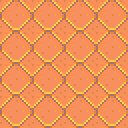 | 
|
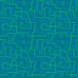 | |||||
| 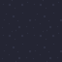 | 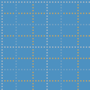 | 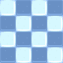 | 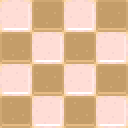 | 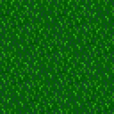 | |||||
| 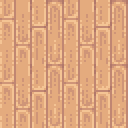 | 
|
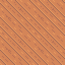 | 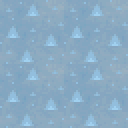 | 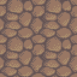 | |||||
| 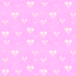 |